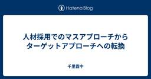
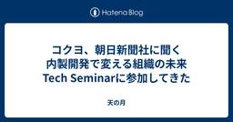
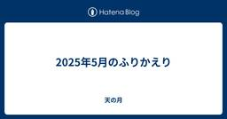
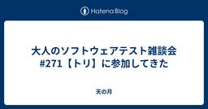
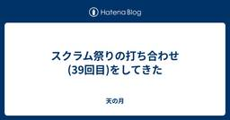
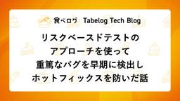
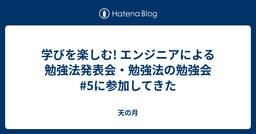

直近1週間の更新
6/1 (日)
5/31 (土)

スクラムフェス金沢2025の打ち合わせ(24回目)に参加してきた  天の月
天の月
aki-m.hatenadiary.com スクラムフェス金沢2025に向けた準備をしてきたので、会の様子を書いていこうと思います。 今日期限の宿題状況確認 モバイルルーター Keynote キャッシュ・フローの更新 打ち上げ 当日の動き ネームタグ 今日期限の宿題状況確認 今日解決する予定だった仕事を確認してきました。 ノベリティに関しては発注が完了して、ConfengineのKeynote内容に関しては、まだ見えないような気がする&Keynoteで話される内容がConfengineに書ききれるような内容としてはまだないので、対応方針を確認することにしました。 また、品川アジャイルに関しては…
10時間前

【Flutter】path_providerを使ったコードをユニットテストするベストプラクティス  Zennの「Test」のフィード
Zennの「Test」のフィード
はじめにFlutterでファイルやデータを保存する際には、デバイスごとの適切な保存先ディレクトリを取得する必要があります。その際によく使われるのが path_provider パッケージです。https://pub.dev/packages/path_providerしかし、このパッケージのメソッドはすべてグローバル関数として提供されており、ユニットテストでモック化するにはひと工夫が必要です。この記事では、path_provider を使ったコードをテストする際の課題と、それを解決するためのモックの方法を具体的に紹介します。 記事の対象者path_provider ...
10時間前

人材採用でのマスアプローチからターゲットアプローチへの転換  千里霧中
千里霧中
優秀なQAエンジニアは、チームやプロジェクトに大きな影響力を与えることがあります。例えば、チームの品質保証能力をイネーブリングして、迅速で的確な品質保証を実現します。チームを顧客満足に向け方向づけして、チームの力をより効率的に顧客価値につながるようにします。また、シフトレフトを促進して、チームの品質保証のコストや迅速性を高めます。 こうした大きな影響力から、優秀なQAエンジニアの採用はソフトウェア開発でしばしば重要な課題になります。 ただQAエンジニアに限らず優秀なエンジニアは売り手市場であり、他社との激しい競争になります。 そこではターゲットとなるエンジニアに、競合他社より自社が魅力的である…
14時間前

【QA】V&V × Never, Must, Wantについてまとめてみた Zennの「QA」のフィード
初めに「V&V」と「Never, Must, Want」について勉強する機会があったので、まとめていこうと思います。 V&Vについて(Verification and Validation)V&Vとは、Verification and Validationの略で、日本語だと、検証と妥当性確認である。項目内容Verification（検証）作っているものが「正しく作られているか？」(仕様通りに作られているか)を確認Validation（妥当性確認）作ったものが「正しいものか？」(ユーザーの要求を満たすか)を確認 M...
15時間前
【QA】V&V × Never, Must, Wantについてまとめてみた Zennの「Test」のフィード
初めに「V&V」と「Never, Must, Want」について勉強する機会があったので、まとめていこうと思います。 V&Vについて(Verification and Validation)V&Vとは、Verification and Validationの略で、日本語だと、検証と妥当性確認である。項目内容Verification（検証）作っているものが「正しく作られているか？」(仕様通りに作られているか)を確認Validation（妥当性確認）作ったものが「正しいものか？」(ユーザーの要求を満たすか)を確認 M...
15時間前

【WACATE2025夏！参加者募集中！！】ポジションペーパー第1弾  ブログ - WACATE
ブログ - WACATE
WACATE実行委員の岡野 （まこっちゃん）（@makotookano）です。 参加者、引き続き募集中です！今回はおかげさまで申込の伸びが良く、早めに締め切ってしまうかもしれません。検討されているかたはお早めにお申し込み続きを読む投稿 【WACATE2025夏！参加者募集中！！】ポジションペーパー第1弾 は WACATE に最初に表示されました。
21時間前
5/30 (金)

コクヨ、朝日新聞社に聞く 内製開発で変える組織の未来 Tech Seminarに参加してきた 天の月
findy.connpass.com こちらのイベントに参加してきたので、会の様子と感想を書いていこうと思います。 会の概要 会の様子 小谷さんの講演 西島さんの講演 会全体を通した感想 会の概要 以下、イベントページから引用です。 AI技術の台頭をはじめ、ビジネス環境が急速に変化し続ける現代において、企業が競争力を維持・向上させるために、迅速かつ柔軟なIT活用が求められています。その中でも、ITの内製化の重要性がますます高まっています。内製化やDXの推進、成功が企業の競争性向上、成長戦略において不可欠な要素となっている一方で、これらの対応が多くの企業にとって課題ともなっております。本イベント…
1日前

✍️ Jestのタイムアウト延長をサクッと解決 Zennの「Test」のフィード
はじめにJestでテストを書いていると、長時間処理を含むテストが原因で「Exceeded timeout of 5000 ms for a test.」エラーにハマったことはありませんか？本記事では、シンプルにタイムアウト値を伸ばす方法をまとめつつ、特にProjen環境での設定例を紹介します。 タイムアウトエラーとは？デフォルトのタイムアウトが5秒に設定されていると、重めの処理（ネットワーク呼び出し、データベース初期化など）を含むテストで失敗します。Exceeded timeout of 5000 ms for a test.このままでは開発効率が下がるので、タイムア...
1日前


Test Double(stub, spy, mock, fake, dummy)について理解する Zennの「Test」のフィード
TestDoubleとは自動テストに使用する偽物、代用品。たとえば、データベースや外部サービスの動作を模倣した偽物（テストダブル）を作り、自動テストで使う。TestDoubleの意味でモックという言葉が使われることがあるが、定義上モックはTestDoubleの一部。モック(Mock)、スタブ(Stub)、フェイク(Fake)、スパイ(Spy)、ダミー(Dummy)がある。用途はそれぞれの項目に記載。また、Test Doubleを使う目的の一つに、疎結合なテストの実現があル。 SUTとはSystem Under Testでテスト対象のシステム(オブジェクト) DOC...
2日前
【申込締切まであと9日！】招待講演者を公開しています！ ブログ - WACATE
WACATE 2025 夏の申込締切まであと9日です！ そんなWACATE 2025 夏ですが、先日より招待講演者を公開しています。 今回は、吉澤智美様に招待講演をお願いしています。 吉澤様はテスト設計コンテスト審査委員続きを読む投稿 【申込締切まであと9日！】招待講演者を公開しています！ は WACATE に最初に表示されました。
2日前

『テストの7つの原則』 〜 パート② 〜 Zennの「Test」のフィード
はじめに現在、アプリ開発者としてプロダクトの持続的な成長やユーザーへのコミットに寄与するためにも、SDLC全体を見渡して開発をすること、および、それにはテストに関する体系的な知識が必要だと考え、それを効率良く学べるJSTQB Foundation Levelの資格試験の勉強をしており、そこでのインプットを記事にしたいと思います。今回はその中でも「テストの7つの原則」の一部について記事にしたいと思います。なお今回記事は 全数テストは不可能こちらの原則について記事にしてみようと思います。 全数テストは不可能とは皆さんがテストをするのはどんな動機からでし...
2日前
『テストの7つの原則』 〜 パート② 〜  ソフトウェアテストタグが付けられた新着記事 - Qiita
ソフトウェアテストタグが付けられた新着記事 - Qiita
はじめに現在、アプリ開発者としてプロダクトの持続的な成長やユーザーへのコミットに寄与するためにも、SDLC全体を見渡して開発をすること、および、それにはテストに関する体系的な知識が必要だと考…
2日前
5/29 (木)

2025年5月のふりかえり 天の月
2025年5月が終わったので、ふりかえりをしていこうと思います。 仕事 社外活動 プライベート 仕事 GWが終わってからは仕事が始まったので当然忙しくはなりましたが、とはいえゆるゆると仕事をしていました。元々助走期間みたいな感じで考えていたので、徐々にリズムを取り戻しながらということでここは理想的な時間を過ごすことができました。 ただし、その後は急にぐっと忙しくなり、リズムが変わりすぎてしまったと共に、瞬発的に仕事を弾いていくような仕事の仕方にちょっとなってしまったなというのは大きな反省点です。 一方で、大きな象みたいなものが見えているものの誰もそこには触れないという動きが起きていた+自分自身…
2日前
【申込締切まであと10日！】WACATE 2025 夏 開催確定しました！
ブログ - WACATE
WACATE 2025 夏の申し込みを開始していますが、あっという間に締切まであと10日となりました！ そんなWACATE 2025 夏ですが、参加者募集にあたって最小催行人数を設定しています。今回の最小催行人数は24名続きを読む投稿 【申込締切まであと10日！】WACATE 2025 夏 開催確定しました！ は WACATE に最初に表示されました。
3日前
5/28 (水)
アジャイルカフェ@オンライン 第73回に参加してきた 天の月
アジャイルカフェ@オンライン 第73回（※Zoom開催 耳だけOK） - connpass こちらのイベントに参加してきたので、会の様子と感想を書いていこうと思います。 会の概要 会の様子 WF開発の成功体験 アジャイル開発の勘違い 伝え方 会全体を通した感想 会の概要 アジャイルコーチの3人が、アジャイル実践者からの悩みに対して答えていくイベントです。今回のテーマは、「ウォーターフォール開発の成功体験がある人に、アジャイル開発を伝える際に気をつけるべきことは？」でした。 会の様子 WF開発の成功体験 天野さんは実際に成功したという話がありました。一人でやっていて小さいプロジェクトをやっていた…
3日前

コマンドライン実行の動作検証とテストカバレッジ向上（開発日記 No.089） Zennの「Test」のフィード
!この記事はgemini-2.0-flash-001によって自動生成されています。 関連リンク前回の開発日記 はじめに昨日はセキュリティチェックの実装を行いました。今日は、以前から課題となっていたコマンドライン実行の動作検証（Issue #3）に取り組みます。テストを充実させ、品質向上を目指します！ 背景と目的これまで、コマンドラインインターフェースの動作が十分に検証されていませんでした。Issue #3では、引数の解析やメイン関数の処理など、CLIの主要な機能を網羅的にテストし、安定性を高めることを目的としています。また、CIパイプラインの改善も行い、セキュリ...
4日前

Jestを使ったテスト設計の基本と実践 Zennの「Test」のフィード
1. Jest とはJest は、Facebook 社が開発した JavaScript 用のテスティングフレームワークです。シンプルな設定で利用できる一方、モックやタイマー制御などの高度な機能も備えています。Jest の主な特徴は以下の通りです：ゼロコンフィグ：設定なしですぐに使用開始できるスナップショットテスティング：UI コンポーネントの変更を検出モック機能：外部依存の制御と分離並行テスト実行：高速な実行環境コードカバレッジレポート：テストの網羅性確認 2. テスト設計の考え方 2.1 テストケースの洗い出し方効果的なテストを書くためには、適切なテスト...
4日前
5/27 (火)

大人のソフトウェアテスト雑談会 #271【トリ】に参加してきた 天の月
大人のソフトウェアテスト雑談会 #271【トリ】 - connpass スクラム祭りの目的 発表の炎上 リトリート 皆で議論する運営と皆で作業する運営 スクラムへの固執 スクラム祭りの目的 スクラム祭りで地域トラックを多数集める目的ってなんなの？という話をしていきました。 結論、やってみると楽しそうだからということ以外はそんなにないのですが、なんでそれくらいしか理由を書いていないのか？という裏話をしたりしました。 発表の炎上 とある発表が炎上したということで、なんで炎上したのかの理由の一つとして、元々発表する予定だった内容と違うという点があったんじゃないか？という話がありました。 ただ、巷では…
4日前

イベントレポート「AIエージェント × E2E自動テストの未来について語る夜」  AIテスト自動化プラットフォーム「MagicPod」公式note
AIテスト自動化プラットフォーム「MagicPod」公式note
こんにちは！MagicPod広報の田上です。2025年5月14日（水）、MagicPod主催のオンラインイベント「AIエージェント × E2E自動テストの未来について語る夜」を開催しました！今回のテーマは、いま話題の AIエージェント と E2E自動テストの融合について。未来を見据えた議論がたっぷり詰まったイベントの模様を、レポートでお届けします！続きをみる
5日前

品質とは何か？を考えたときの品質エンジニアという仕事 Zennの「Test」のフィード
「品質とは何か？」社内のQAエンジニアを担当している方からの問われたときに、素直に「何だろう」となった。「バグがないこと」「テスト密度が基準値内であること」「ユーザの期待値を満たすこと」みたいな答えがパパっと浮かんできたが、どうやらそれは本質ではない。現在、ソフトウェア品質エンジニア（QAエンジニア）という職能は、コードを書かない開発者として進化を遂げつつある。本記事では、品質の概念整理から、QAという専門職の本質、そしてキャリアとしての価値までを横断的に言語化する。 ✔ 品質とは「成果の保証」である従来、品質とは「要件を満たしているかどうか」を指していた。しか...
5日前
5/26 (月)

スクラム祭りの打ち合わせ(39回目)をしてきた 天の月
aki-m.hatenadiary.com こちらの打ち合わせをしてきたので、会の様子と感想を書いていこうと思います。 キャッシュ・フロー更新 スポンサー募集Formsの変更&テスト スポンサーメール返信 請求書発行依頼 請求書発行枚数の確認 keynoteの想い キャッシュ・フロー更新 ありがたいことにここ最近はスポンサーが増えていることもあって毎回この作業から入っています。今回はついにプラチナスポンサーの応募があったので、そちらを反映させていきました。 スポンサー募集Formsの変更&テスト スポンサー募集Formsの家、プラチナスポンサーが前述の通り申し込みあって完売したので、そちらを閉…
5日前

AI が生成する大量の Python コードの品質を管理するための pyproject.toml 設定 Zennの「QA」のフィード
AI が生成する大量のコードをレビューできますか？チームで Python の開発を行うとき、ChatGPT などで作られたコードをレビューすることになることも増えてきました生成 AI によってコードは大量生産することが可能になりましたが、レビューのプロセスでその大量のコードをチェックすることができる体制は整っていますでしょうか？レビューにも AI を使う手法もありますが、次の問題があります:料金ハルシネーション による誤検知やバグの見逃しAI を使う前に、まずはアルゴリズムによるレビューの自動化を行うことが重要です 全体的な方針 最低でも Ruff は使い...
6日前
AI が生成する大量の Python コードの品質を管理するための pyproject.toml 設定 Zennの「Test」のフィード
AI が生成する大量のコードをレビューできますか？チームで Python の開発を行うとき、ChatGPT などで作られたコードをレビューすることになることも増えてきました生成 AI によってコードは大量生産することが可能になりましたが、レビューのプロセスでその大量のコードをチェックすることができる体制は整っていますでしょうか？レビューにも AI を使う手法もありますが、次の問題があります:料金ハルシネーション による誤検知やバグの見逃しAI を使う前に、まずはアルゴリズムによるレビューの自動化を行うことが重要です 全体的な方針 最低でも Ruff は使い...
6日前

Reactテスト入門(Jest, React Testing Library,MSW) Zennの「Test」のフィード
はじめに普段はReact.jsやNext.jsを使用していますが、テストを書いたことがなかったので自分の為の忘備録、はじめてReactでテストを書く方のためになればと思い本記事を書かせていただきました。 テストとはアプリケーションの動作を検証するものであり、品質や信頼性を高めるために行います。テストには大きく分けてStatic test,Unit test,Integration test,E2E testがあります。下記の下に行けば行くほど実装コストが高くなり、信頼性が高くなります。Static test(静的テスト)コードを実行せずにするテストのことです。以下の...
6日前

リスクベースドテストのアプローチを使って重篤なバグを早期に検出しホットフィックスを防いだ話 31 QA - Tabelog Tech Blog
31 QA - Tabelog Tech Blog
はじめに こんにちは。 飲食店向けモバイルオーダーシステム「食べログオーダー」でQAチームの職域リーダーをしている池田です。 食べログオーダーとは「お客様が自分のスマートフォンを使ってメニューを注文できる」サービスです。 今回は食べログオーダーのテストアプローチとして取り入れて成功したリスクベースドテストについてお話しします。 目次 プロジェクトの課題 リスクベースドテストの導入 リスクベースドテストについて リスクベースドテストの実施における工夫 結果と成果 QAチームが貢献できたことの考察 まとめ プロジェクトの課題 私が今回担当したプロジェクトは「食べログオーダーに外部POSのメニューを…
6日前
5/25 (日)

学びを楽しむ! エンジニアによる勉強法発表会・勉強法の勉強会 #5に参加してきた 天の月
https://yumemi.connpass.com/event/354010/ こちらのイベントに参加してきたので、会の様子と感想を書いていこうと思います。 会の概要 会の様子 インプットの選択と集中を、自分好みのAIと共に AI時代だからこそ、自分で考える知的生産術 アウトプットを目指す勉強法 グラフィックデザイナーがSwiftUIを習得するために取り組んでいる学習法 学びは趣味の延長線 会全体を通した感想 会の概要 名前の通り、エンジニアの方々の「勉強」に関して勉強していくイベントです。 会の様子 インプットの選択と集中を、自分好みのAIと共に 技術情報が氾濫している状態で選択と集中の…
6日前

【Flutter】Interceptorを丁寧にテストするためのベストプラクティス Zennの「Test」のフィード
はじめにdioのinterceptorの実装方法については、以前こちらの記事で解説しました。https://zenn.dev/harx/articles/6460e36ea3f6f2一方で、 Interceptor のテストを行うには少々工夫が必要です。この記事では、実践的なテスト手法とその背景にある考え方を具体的に紹介します。「どこまでテストすべきか」「何をどうモックすべきか」といった疑問を持った方の助けになれば幸いです。 記事の対象者Flutter で Dio を使ってネットワーク層を構築している方自作の Interceptor をしっかりテストしたい方d...
6日前